리눅스마스터-1급 (2015-09-12 기출문제)
1과목: 리눅스 실무의 이해
1. 운영체제의 유형에 대한 설명으로 틀린 것은?
- Multi-switching : 다수의 작업이 동시 실행 되나 백그라운드 프로그램만 동작하는 형태
- Single-tasking : 컴퓨터가 한 번에 하나의 작업만 처리하는 형태
- Multi-tasking : 한 사용자가 여러 개의 작업을 동시에 수행하는 시스템
- Multi-user : 단일 시스템에서 여러 사용자의 프로그램이 실행되는 형태
(정답률: 72%)

2. 다음 중 시스템 성능을 나타내는 4가지 요소에 대한 설명으로 틀린 것은?
- Throughput : 단위 시간당 처리 능력을 나타냄
- Turnaround Time : 작업이 제출되어서 결과를 얻을 때까지의 총 소요시간
- 신뢰도(Reliability) : 시스템이 얼마나 정확하게 작동되는지를 나타냄
- 사용 가능도(Availability) : 시스템에서 얼마나 많은 오류가 발생되는지를 확인
(정답률: 73%)
3. 다음 중 운영체제의 특징에 대한 설명으로 틀린 것은?
- 다중교환(Multi-switching) : 다수의 작업이 동시 실행되나 포그라운드 프로그램만 동작하는 형태
- 단일작업(Single-tasking) : 컴퓨터가 한 번에 하나의 작업만 처리하는 형태
- 대화형처리(Interactive Processing) : 다수의 사용자가 서로 메시지를 주고받으며 처리하는 형태
- 일괄처리(Batch Processing) : 여러 개의 작업을 묶어 한꺼번에 처리하는 형태
(정답률: 60%)
4. 리눅스의 특징으로만 짝지어진 것으로 알맞은 것은?
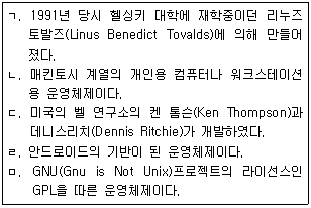
- ㄱ , ㄴ
- ㄱ , ㄴ , ㄹ
- ㄱ , ㄹ , ㅁ
- ㄷ , ㅁ
(정답률: 72%)
5. 다음 중 국내 기업 또는 개인이 참여한 리눅스 배포판으로 틀린 것은?
- 슬랙웨어(Slackware)
- SULinux(Sulinux)
- 아시아눅스(Asianux)
- 안녕리눅스(AnNyung Linux)
(정답률: 66%)
6. 다음 중 RAID(Redundant Array of Independent Disks) 종류에 대한 설명으로 틀린 것은?
- RAID-0 : 스트립은 가지고 있지만 데이터를 중복해서 기록하지 않는다.
- RAID-1 : 중복 저장된 데이터를 가진 적어도 두 개의 드라이브로 구성된다.
- RAID-5 : 패리티 정보를 저장하지만 중복저장하지 않으며 최소 2개 이상의 디스크로 구성된다.
- RAID-10 : 스트립 어레이를 제공하며, RAID-1 보다 높은 성능을 제공한다.
(정답률: 67%)
7. 다음 중 GRUB의 역할이 틀린 것은?
- GRUB는 ROM-BIOS보다 먼저 컴퓨터를 시작 할 때 수행된다.
- GRUB는 실행 후에 운영체제의 커널을 RAM으로 읽어 들여 적재하는 역할을 한다.
- GRUB는 하드디스크의 첫 번째 MBR(Master Boot Record)라는 곳에 저장된다.
- ROM-BIOS는 하드디스크의 MBR에 있는 부트 매니저에게 제어권을 넘겨준다.
(정답률: 58%)
8. 다음 중 /etc에 대한 설명으로 틀린 것은?
- 시스템에 관한 각종 환경 설정에 연관된 파일들로 구성되어 있다.
- 실행 레벨과 관련된 디렉터리를 포함하고 있다.
- 사용자 계정 설정관련 파일을 포함하고 있다.
- 시스템 장치 파일을 저장하고 있다.
(정답률: 58%)
9. 다음 중 시스템에서 사용하는 각종 프로그램들의 컴파일되지 않은 소스 파일들이 저장되어 있는 디렉터리로 알맞은 것은?
- /usr/src
- /usr/sbin
- /usr/lib
- /usr/etc
(정답률: 67%)
10. 다음 중 ( 괄호 ) 안에 들어갈 내용으로 알맞은 것은?
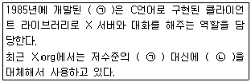
- (ㄱ) GTK - (ㄴ) GTK+
- (ㄱ) QT - (ㄴ) QT2
- (ㄱ) KDE - (ㄴ) GNOME
- (ㄱ) Xlib - (ㄴ) XCB
(정답률: 65%)
11. 다음 중 프로세스의 활동 상태에 대한 설명으로 틀린 것은?
- 지연상태
- 준비상태
- 실행상태
- 생성상태
(정답률: 48%)
12. 다음 중 리눅스 런레벨(Run level)을 수정하기 위해 편집하는 파일로 알맞은 것은?
- /etc/console
- /etc/inittab
- /etc/passwd
- /etc/sysconfig/console
(정답률: 73%)
13. 다음 중 X-window 시스템의 기본 구성 요소로 틀린 것은?
- 서버/클라이언트
- Xlib
- Zlib
- X Protocol
(정답률: 70%)
14. 현재 디렉터리 및 그 하위 디렉터리를 포함하여 .ini로 끝나는 파일 중 ihd라는 문자열을 포함한 파일을 찾는 명령으로 알맞은 것은?(단, 대소문자 구분 없이 검색한다.)
- find / -name “*.ini” | grep -l ihd
- find ./ -name “*.ini” | grep –ei ihd
- grep / -name *.ini | find –nl ihd
- grep ./ -name *.ini | find –ni ihd
(정답률: 54%)
15. Shell 프로그래밍에 있어 특별 내장 변수 “$?”의설명이 알맞은 것은?
- 최근에 실행된 프로세스의 상태값
- 실행된 셸스크립트명
- 최근에 실행한 백그라운드 명령의 프로세스의 상태값
- 셸스크립트의 PID
(정답률: 49%)
16. 다음 중 데이터 링크 계층에 관한 설명으로 틀린 것은?
- 프레이밍(Framing) : 프레임의 시작 및 끝에 불필요한 부분을 삭제한다.
- 오류제어 : 전송 오류를 검출하여 오류가 발생한 프레임의 재전송을 요구한다.
- 흐름제어 : 송신과 수신측의 프레임 처리 속도가 같이 않을 경우 흐름 제어를 수행한다.
- 시간제한 및 확인 : 정해진 시간 내에 확인 매시지가 안 오면 해당 프레임을 재전송한다.
(정답률: 54%)
17. 다음 중 T568-B 케이블 핀번호와 색상 조합으로 틀린 것은?
- 1핀 : 주황색/흰색
- 3핀 : 녹색/흰색
- 4핀 : 파란색
- 8핀 : 녹색
(정답률: 64%)
18. 다음 중 프로토콜이 다른 통신망을 상호 접속하기 위한 장치로 알맞은 것은?
- 브리지(Bridge)
- 리피터(Repeater)
- 게이트웨이(Gateway)
- 라우터(Router)
(정답률: 58%)
19. 다음 중 Listen 상태인 소켓의 정보만 보고자 할 경우 명령어로 알맞은 것은?
- netstat -anl
- netstat -utan
- netstat -utnl
- netstat –utnla
(정답률: 46%)
20. 다음 중 ifconfig 명령으로 알 수 없는 항목으로 알맞은 것은?
- MAC address
- RX packets
- Duplex
- MTU
(정답률: 59%)
2과목: 리눅스 시스템 관리
21. 다음 중 보안 강화를 위한 root 계정 관리 방법에 대한 설명으로 틀린 것은?
- 환경 변수인 TMOUT를 설정하여 무의미하게 장시간 로그인하는 것을 막는다.
- 일반 사용자에게 특정 명령어 권한만을 할당해 주는 경우에는 su보다 sudo 명령을 이용하도록 한다.
- root 이외에 UID가 0인 사용자를 추가해서 보안을 강화한다.
- PAM을 이용하여 root 계정으로 직접 로그인하는 서비스를 제어한다.
(정답률: 69%)
22. 다음 ( 괄호 ) 안에 들어갈 내용으로 알맞은 것은?
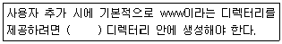
- /etc/default/useradd
- /home
- /etc/login.defs
- /etc/skel
(정답률: 50%)
23. 다음 중 posein 사용자의 아이디를 yuloje로 변경 할 때 알맞은 것은?
- usermod –l yuloje posein
- usermod –n yuloje posein
- usermod –l posein yuloje
- usermod –n posein yuloje
(정답률: 35%)
24. 다음 중 admin 그룹의 관리자를 posein으로 지정 하는 명령으로 알맞은 것은?
- gpasswd –a admin posein
- gpasswd –a posein admin
- gpasswd –A admin posein
- gpasswd –A posein admin
(정답률: 38%)
25. 다음 그림에 해당하는 명령으로 알맞은 것은?
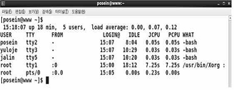
- w
- who
- id
- groups
(정답률: 52%)
26. 다음 ( 괄호 ) 안에 들어갈 내용으로 알맞은 것은?
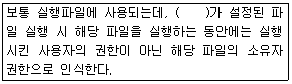
- UUID
- Set-UID
- Set-GID
- Sticky-Bit
(정답률: 62%)
27. 다음 중 joon.txt 파일의 심볼릭 링크 파일로 j를 생성할 때 알맞은 것은?
- ln joon.txt j
- ln j joon.txt
- ln -s joon.txt j
- ln -s j joon.txt
(정답률: 54%)
28. 다음 중 /etc/fstab의 첫 번째 필드에 설정하는 값으로 틀린 것은?
- UUID
- LABEL
- 마운트 포인트
- 장치파일명
(정답률: 55%)
29. 다음 중 디스크의 사용가능한 용량을 확인할 때 사용하는 명령어로 알맞은 것은?
- free
- df
- du
- quotacheck
(정답률: 56%)
30. 다음 중 cat 명령으로 텍스트 파일에 존재하는 개행문자나 탭문자 등의 확인할 때 사용하는 옵션으로 알맞은 것은?
- -a
- -A
- -b
- -n
(정답률: 42%)
31. 다음 중 현재 활성화된 파티션 정보를 확인할 때 참고하는 파일로 알맞은 것은?
- /proc/partinfo
- /proc/partition
- /proc/partitions
- /proc/meminfo
(정답률: 57%)
32. cron 사용자 설정 파일의 내용이 다음과 같을때 관련 설명으로 알맞은 것은?
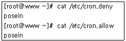
- root 사용자만 cron을 사용할 수 있다.
- root 사용자를 포함해서 어떤 사용자도 cron을 사용할 수 없다.
- 일반 사용자 중에서는 posein만 cron 사용이 가능하다.
- 일반 사용자 중에서는 posein를 제외하고 모든 사용자가 cron 사용이 가능하다.
(정답률: 49%)
33. 다음 중 top 명령으로 확인할 수 없는 항목으로 알맞은 것은?
- 네트워크 부하량
- 시스템 부하량
- 메모리 및 스왑 사용량
- 실행중인 프로세스의 개수
(정답률: 55%)
34. 다음 중 nice 명령에 대한 설명으로 틀린 것은?
- NI값을 지정할 때 사용한다.
- 값이 클수록 우선순위가 높다.
- 일반사용자는 우선순위를 높일 수 없다.
- 지정 가능한 값의 범위는 -20 ~ 19이다.
(정답률: 60%)
35. 다음 중 사용자가 로그아웃하거나 작업 중인 터미널 창이 닫혀도 실행중인 프로세스를 백그라운드 프로세스로 계속 작업할 수 있도록 해주는 명령으로 알맞은 것은?
- bg
- fg
- hup
- nohup
(정답률: 55%)
36. 다음 중 설치된 파일로 rpm 패키지 이름을 확인하려고 할 때 ( 괄호 ) 안에 들어갈 내용으로 알맞은 것은?
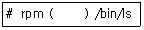
- -qa
- -qc
- -qf
- -qp
(정답률: 36%)
37. 다음 중 yum 명령으로 music이라는 문자열이 포함된 패키지를 찾으려고 할 때 알맞은 것은?
- yum search music
- yum list music
- yum info music
- yum find music
(정답률: 51%)
38. 다음 ( 괄호 ) 안에 들어갈 내용으로 알맞은 것은?
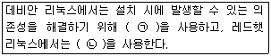
- (ㄱ) yum (ㄴ) apt-get
- (ㄱ) apt-get (ㄴ) yum
- (ㄱ) apt-get (ㄴ) yast
- (ㄱ) yum (ㄴ) yast
(정답률: 59%)
39. 다음 ( 괄호 ) 안에 들어갈 내용으로 알맞은 것은?
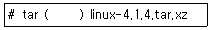
- zxvf
- jxvf
- Jxvf
- Zxvf
(정답률: 49%)
40. 다음 중 압축률이 높은 순서로 나열한 것으로 알맞은 것은?
- compress > gzip > bzip2 > xz
- compress > bzip2 > gzip > xz
- xz > gzip > bzip2 > compress
- xz > bzip2 > gzip > compress
(정답률: 47%)
41. 리눅스에서의 장치 설정 중 플러그 앤 플레이(PnP) 기능에 관한 설명이 틀린 것은?
- 모뎀과 네트워크 카드, 사운드 카드 등의 각종 하드웨어(장치)를 찾아낸 장소를 자동적으로 소프트웨어에 알려준다.
- 물리적 장치와 이것을 조작하는 소프트웨어(장치 드라이버)와 일치시킨다.
- 운영체제가 물리적 장치를 인식할 수 있게하는 소프트웨어이다.
- 장치와 드라이버 사이에 통신 채널을 만든다.
(정답률: 47%)
42. 다음 중 커널모듈을 로드하는 명령어로 알맞은 것은?
- modprobe
- lsmod
- rmmod
- inmod
(정답률: 47%)
43. 다음 중 리눅스 부팅 시 자동으로 마운트 되도록 설정하는 파일로 알맞은 것은?
- /etc/grub
- /etc/fstab
- /etc/inittab
- /etc/autofs
(정답률: 59%)
44. 다음 중 스캐너를 사용하려고 할 때 관련 패키지 설치 명령으로 알맞은 것은?
- yum install sane
- yum install scanner
- yum install scan
- yum install xscand
(정답률: 55%)
45. 다음 중 프린터 작업 상태를 확인 할 수 있는 명령으로 알맞은 것은?
- lpstat
- lprm
- pr
- lpr
(정답률: 55%)
46. 다음 중 셸 환경에서 text.txt 파일의 내용을 출력하는 명령으로 알맞은 것은?
- lpc text.txt
- pr text.txt
- cat text.txt | printer
- cat text.txt > /dev/lp
(정답률: 48%)
47. 다음 중 커널에서 제공하는 파일 시스템 정보를 확인 할 때 참고하는 파일로 알맞은 것은?
- /proc/filesystems
- /etc/filesystem
- /etc/fstab
- /etc/system/fssys
(정답률: 42%)
48. 다음 중 부팅 시 네트워크 관련 모듈을 자동으로 적재하기 위해 사용되는 파일 또는 디렉터리로 알맞은 것은?
- /etc/inittab
- /etc/modprobe.d
- /etc/services
- /etc/my.cnf
(정답률: 51%)
49. 다음 중 커널을 재컴파일 하기 위해 오브젝트 및 .config 파일을 삭제하는 명령으로 알맞은 것은?
- make clean
- make menuconfig
- make mrproper
- make config
(정답률: 45%)
50. 다음 중 선택된 커널 모듈을 컴파일하는 명령으로 알맞은 것은?
- make bzImage
- make modules
- make install
- make modules_install
(정답률: 42%)
51. 다음 중 /etc/rsyslog.conf 파일에서 ssh와 같이 인증이 필요한 프로그램에서 발생한 메시지를 처리하는 facility로 가장 알맞은 것은?
- auth
- authpriv
- daemon
- syslog
(정답률: 42%)
52. 다음 중 logrotate에 대한 설명으로 틀린 것은?
- cron에 의해 스케줄링되어 실행된다.
- 로그 파일 압축은 제공하지 않는다.
- 로그 파일은 하루, 일주일, 한달 단위로 로테이션 할 수 있다.
- 파일 크기의 제한을 통해 로테이션 할 수 있다.
(정답률: 54%)
53. 다음 중 /var/log/secure 파일에 쌓이는 로그 기록과 가장 거리가 먼 것은?
- telnet
- ftp
- ssh
- xinetd
(정답률: 37%)
54. 다음 중 접속에 실패한 기록만을 확인할 때 사용하는 명령으로 알맞은 것은?
- last
- lastb
- lastw
- lastlog
(정답률: 54%)
55. 다음은 grub.conf 파일의 일부로 싱글모드 사용자 접근을 막기 위해 암호를 설정하는 과정이다. ( 괄호 )안에 들어간 내용으로 알맞은 것은?
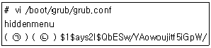
- (ㄱ) passwd (ㄴ) --md5
- (ㄱ) passwd (ㄴ) --crypt
- (ㄱ) password (ㄴ) --md5
- (ㄱ) password (ㄴ) --crypt
(정답률: 39%)
56. ping 응답하지 않기 위해 커널 파라미터값을 조정하려고 한다. 다음 중 관련 명령으로 알맞은 것은?
- sysctl –w net.ipv4.icmp_echo_ignore_all=0
- sysctl –w net.ipv4.icmp_echo_ignore_all=1
- sysctl –n net.ipv4.icmp_echo_ignore_all=0
- sysctl –n net.ipv4.icmp_echo_ignore_all=1
(정답률: 41%)
57. 다음 중 SELinux 설정 상태를 확인하는 명령으로 알맞은 것은?
- getenforce
- setenforce
- selinux
- setselinux
(정답률: 42%)
58. 다음 중 리눅스에서 백업 대상이 되는 디렉터리로 가장 거리가 먼 것은?
- /etc
- /usr
- /var
- /sys
(정답률: 43%)
59. 다음은 tar 명령을 이용하여 증분 백업하는 예이다. ( 괄호 ) 안에 들어갈 옵션으로 알맞은 것은?
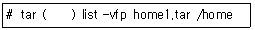
- -g
- -L
- -N
- -C
(정답률: 42%)
60. 다음 중 dd 명령어에 대한 설명으로 틀린 것은?
- 디스크 단위로 백업할 때 사용한다.
- 파티션 단위로 백업할 때 사용한다.
- 디렉터리 단위로 백업할 때 사용한다.
- 소문자로 이루어진 텍스트 파일을 전부 대문자로 전환할 때 사용한다.
(정답률: 38%)
3과목: 네트워크 및 서비스의 활용
61. 다음 중 아파치 웹 서버에 대한 설명으로 틀린 것은?
- 소스가 공개되어 있는 공개 소프트웨어이다.
- 리눅스 및 유닉스 계열만 지원하는 웹 서버 프로그램이다.
- 멀티스레딩(Multi-threading)을 지원한다.
- PHP, JSP 등 다양한 웹 프로그래밍 언어를 지원한다.
(정답률: 58%)
62. 다음 HTTP 관련 상태 코드 중 “Not Found”를 나타내는 코드로 알맞은 것은?
- 401
- 402
- 403
- 404
(정답률: 57%)
63. 다음 중 아파치 웹 서버 2.2 버전에서 포트 번호를 나타내는 항목으로 알맞은 것은?
- Port 80
- http_port 80
- Listen 80
- Service 80
(정답률: 40%)
64. 웹 문서가 위치하는 디렉터리를 “/usr/local/apache/web”으로 변경하려고 한다. 다음 중 httpd.conf 파일에서 설정해야 하는 항목으로 알맞은 것은?
- ServerRoot
- DocumentRoot
- DirectoryIndex
- IndexRoot
(정답률: 43%)
65. 다음은 MySQL을 소스 파일로 설치하는 과정이다. ( 괄호 ) 안에 들어갈 명령으로 알맞은 것은?
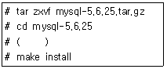
- ./configure
- ./configure .
- cmake
- cmake .
(정답률: 30%)
66. 다음은 NIS 관련 설명이다. ( 괄호 ) 안에 들어갈 내용으로 알맞은 것은?
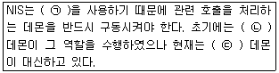
- (ㄱ) RPC (ㄴ) rpcbind (ㄷ) portmap
- (ㄱ) RPC (ㄴ) portmap (ㄷ) rpcbind
- (ㄱ) BIND (ㄴ) rpcbind (ㄷ) portmap
- (ㄱ) BIND (ㄴ) portmap (ㄷ) rpcbind
(정답률: 39%)
67. 다음 LDAP 속성 중 이름과 성의 조합을 나타내는 키워드로 알맞은 것은?
- cn
- sn
- dc
- givenName
(정답률: 49%)
68. 다음 중 NIS 서버명과 관련 맵 파일을 출력할 때 사용하는 NIS 클라이언트 명령으로 알맞은 것은?
- ypbind
- ypcat
- yptest
- ypwhich
(정답률: 34%)
69. 다음 중 NIS 서버에서 관련 맵 파일이 생성되는 디렉터리로 알맞은 것은?
- /var/yp
- /usr/yp
- /var/ypserv
- /usr/ypserv
(정답률: 32%)
70. 다음 중 NIS 클라이언트에서 NIS 서버 및 도메인명을 설정하는 파일로 알맞은 것은?
- /etc/yp.conf
- /etc/ypserv.conf
- /etc/ypbind.conf
- /etc/ypxfrd.conf
(정답률: 33%)
71. 다음 중 smb.conf에 대한 설명으로 틀린 것은?
- 특정 섹션의 정의는 [ ]을 사용한다.
- 각 행이 끝날 때는 세미콜론(;)을 덧붙여야 한다.
- #으로 시작하는 행은 주석으로 간주되어 무시된다.
- 항목과 값의 설정은 ‘name = value’ 형식으로 지정한다.
(정답률: 44%)
72. posein이라는 삼바 사용자를 암호 입력 없이 로그인 되도록 설정하려고 한다. 다음 ( 괄호 ) 안에 들어갈 내용으로 알맞은 것은?
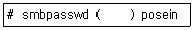
- -d
- -e
- -n
- -x
(정답률: 27%)
73. 다음에서 설명하는 NFS 서버 설정 옵션으로 알맞은 것은?
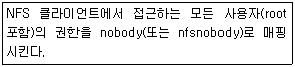
- anonuid
- all_squash
- root_squash
- no_root_squash
(정답률: 41%)
74. NFS 서버에서 익스포트된 정보를 확인하려고 한다. 다음 ( 괄호 ) 안에 들어갈 명령으로 알맞은 것은?
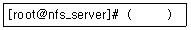
- rpcinfo
- nfsstat
- exportfs
- showmount
(정답률: 38%)
75. 다음 중 vsftpd.conf 설정에서 접속한 사용자의 홈 디렉터리를 최상위 디렉터리로 지정하려고 할 때 관련 항목으로 알맞은 것은?
- chroot_user=YES
- chroot_local=YES
- chroot_user_local=YES
- chroot_local_user=YES
(정답률: 31%)
76. 다음 중 메일과 관련된 프로토콜로 가장 거리가 먼 것은?
- SNMP
- SMTP
- IMAP
- POP3
(정답률: 51%)
77. 다음 중 메일 서버 관련 프로그램으로 틀린 것은?
- qmail
- sendmail
- postfix
- evolution
(정답률: 52%)
78. 다음은 sendmail.cf 파일을 복원하는 과정이다. ( 괄호 ) 안에 들어갈 내용으로 알맞은 것은?
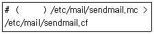
- m4
- sendmail
- newaliases
- makemap hash
(정답률: 44%)
79. 다음 설명과 관련 있는 파일로 알맞은 것은?
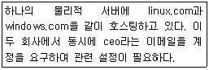
- /etc/aliases
- /etc/mail/access
- /etc/mail/virtusertable
- /etc/mail/local-host-names
(정답률: 37%)
80. 다음 ( 괄호 ) 안에 들어갈 내용으로 알맞은 것은?
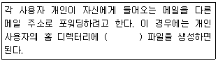
- .forward
- .procmail
(정답률: 50%)
81. 다음 중 DNS 서버에 대한 설명으로 틀린 것은?
- 도메인을 운영하기 위해서는 반드시 Primary Name Server는 구성해야 한다.
- Secondary Name Server는 Primary Name Server의 존 파일을 백업하는 역할을 수행한다.
- Caching Name Server를 구성하면 인터넷 사용 속도를 높일 수 있다.
- Caching Name Server는 반드시 도메인이 있어야 구성할 수 있다.
(정답률: 44%)
82. 다음 중 bind-chroot 패키지를 설치했을 때 존(zone) 파일을 생성해야할 디렉터리로 알맞은 것은?
- /var/named
- /chroot/var/named
- /var/named/chroot
- /var/named/chroot/var/named
(정답률: 32%)
83. 다음 중 /etc/named.conf 파일에서 주석 구문으로 사용하는 특수문자로 틀린 것은?
- ;
- //
- #
- /* */
(정답률: 49%)
84. 다음은 /etc/named.conf 파일의 내용이다. ( 괄호 )안에 들어갈 내용으로 알맞은 것은?
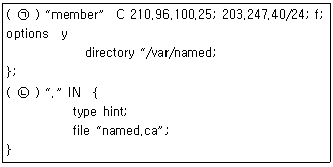
- (ㄱ) acl (ㄴ) zone
- (ㄱ) view (ㄴ) zones
- (ㄱ) key (ㄴ) zone
- (ㄱ) controls (ㄴ) zones
(정답률: 44%)
85. 다음 중 존(zone) 파일에서 IPv6 주소를 기입하기 위해 사용되는 레코드 타입으로 알맞은 것은?
- A
- AA
- AAA
- AAAA
(정답률: 43%)
86. 다음에서 설명하는 가상화 효과로 알맞은 것은?
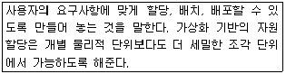
- 향상된 보안
- 높아진 가용성
- 증가된 확장성
- 향상된 프로비저닝
(정답률: 44%)
87. 다음에서 설명하는 가상화 기능으로 알맞은 것은?
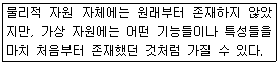
- 공유
- 절연
- 단일화
- 에뮬레이션
(정답률: 53%)
88. 다음 설명과 관련 있는 가상화 프로그램으로 알맞은 것은?
- Docker
- Hyper-V
- OpenStack
- VirtualBox
(정답률: 32%)
89. 리눅스 서버에 장착된 CPU의 가상화 지원 여부를 확인하려고 한다. 다음 중 관련 파일로 알맞은 것은?
- /proc/cmdline
- /proc/cpuinfo
- /proc/stat
- /proc/cpustat
(정답률: 53%)
90. 다음 중 셸 명령행 기반으로 가상 머신을 생성, 상태 정보 출력, 일시 정지 등의 기능을 제공하는 명령으로 알맞은 것은?
- virt-manager
- virt-top
- virsh
- libvirtd
(정답률: 40%)
91. 운영 중인 텔넷 및 rsync 서비스를 긴급히 중단 시키려고 한다. ( 괄호 ) 안에 들어갈 내용으로 알맞은 것은?
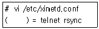
- deny
- disable
- disabled
- services
(정답률: 37%)
92. 운영 중인 텔넷 서비스의 이용 시간을 제한하려고 한다. ( 괄호 ) 안에 들어갈 내용으로 알맞은 것은?
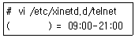
- allow_time
- allow_times
- access_time
- access_times
(정답률: 31%)
93. 다음은 squid.conf 파일의 일부이다. ( 괄호 ) 안에 들어갈 내용으로 알맞은 것은?
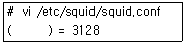
- port
- listen
- http_port
- squid_port
(정답률: 31%)
94. 다음 중 dhcpd.conf 파일에서 할당하려는 IP 주소 대역을 지정하는 설정으로 알맞은 것은?
- range 192.168.1.2 192.168.1.254
- range 192.168.1.2-192.168.1.254
- range 192.168.1.2:192.168.1.254
- range 192.168.1.2~192.168.1.254
(정답률: 43%)
95. 다음 설명과 관련 있는 서버로 알맞은 것은?
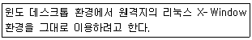
- VNC
- NTP
- DHCP
- PROXY
(정답률: 51%)
96. 다음에서 설명하는 DOS 공격으로 알맞은 것은?
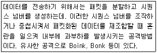
- Teardrop Attack
- Ping of Death
- Land Attack
- Smurf Attack
(정답률: 40%)
97. 다음 프로그램 소스와 관련 있는 DOS 공격으로 알맞은 것은?
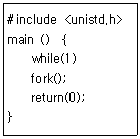
- 가용 디스크 자원 고갈
- 가용 메모리 자원 고갈
- 가용 프로세스 자원 고갈
- 네트워크 대역폭 고갈
(정답률: 48%)
98. 다음 중 IDS 및 IPS 도구로 알맞은 것은?
- iptables
- Suricata
- PAM
- tcpdump
(정답률: 38%)
99. 다음 중 IP 주소 기반의 차단 기능을 제공하는 프로그램으로 가장 거리가 먼 것은?
- iptables
- TCP wrapper
- PAM
- xinetd
(정답률: 32%)
100. 들어오는 패킷을 버리는 것과 동시에 적당한 응답 패킷이나 메시지를 전달하려 한다. ( 괄호 ) 안에 들어갈 내용으로 알맞은 것은?
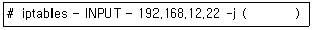
- ACCEPT
- DROP
- DENY
- REJECT
(정답률: 40%)